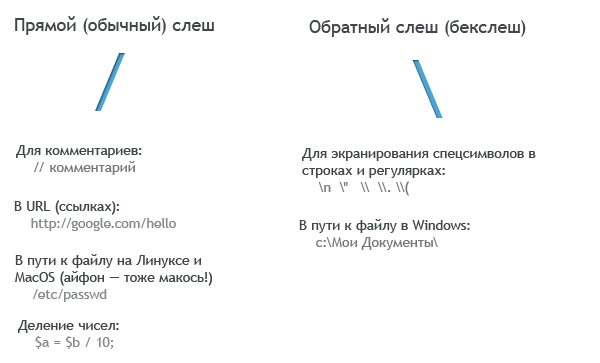
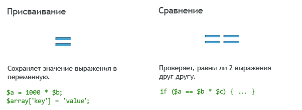
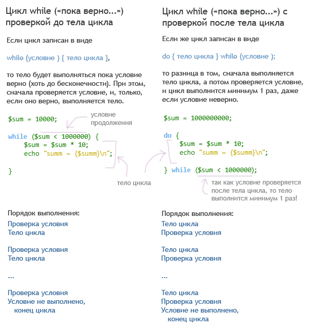
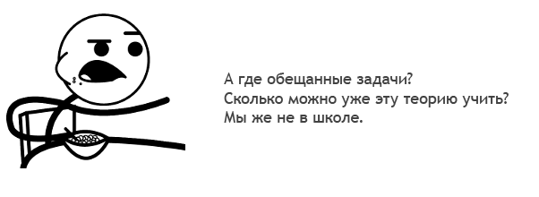
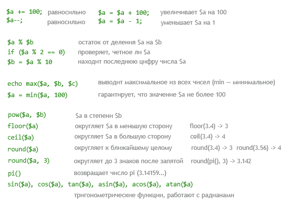
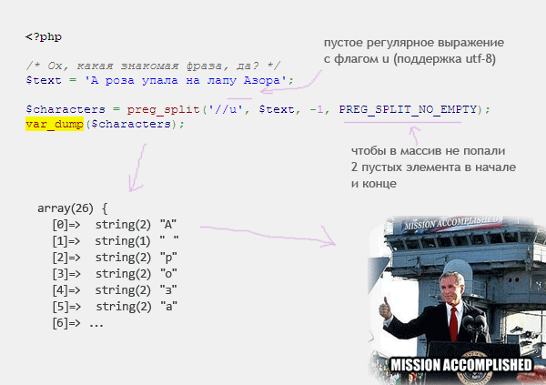
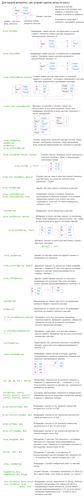
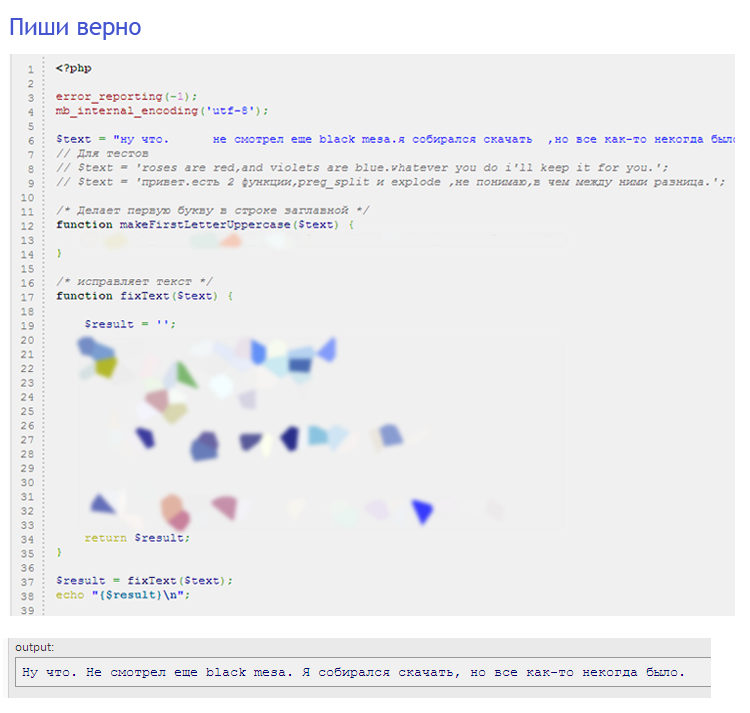
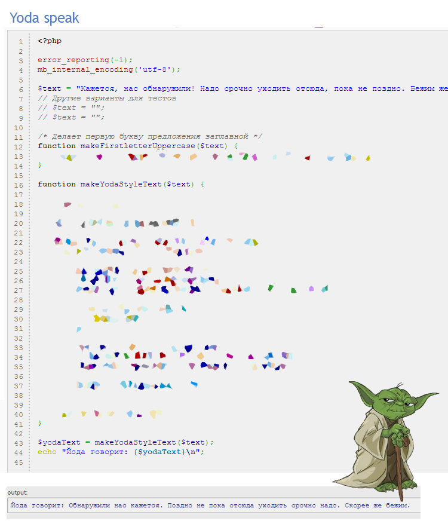
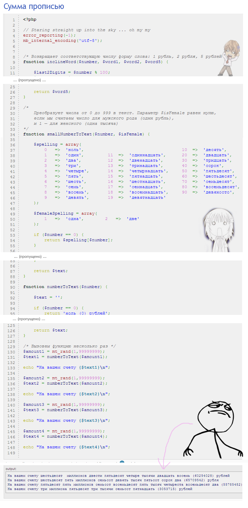

Ну что, читатель, если ты прошел огонь, воду и медные трубы предыдущих уроков, решил хотя бы половину задач, у меня для тебя есть хорошая новость: ты способен программировать на языке PHP. Конечно, пока идти писать серьезные приложения или сайты тебе рано, так как у тебя не хватает нужных знаний, но это не беда. Проходи этот курс дальше, делай задания и все у тебя получится.
Если ты не решил хотя бы половины задач ... лучше все же вернуться и решить их. Без этого тебе будет очень-очень тяжело изучать материал дальше. Если ты совсем запутался — гугли, ищи ответ, но не сдавайся. Да, регулярные выражения или массивы — сложная тема, но они используются в каждой программе. Без этих знаний не обойтись. Если что-то непонятно объясняется — напиши на почту, это не ты глупый, это автор плохо объясняет.
Поскольку это последний урок на 1-м уровне, сегодня мы будем повторять старый материал, изучим чуть-чуть нового и порешаем задачки. Решивший их автоматически переходит на 2-й левел, не решивший — решает дальше!
Кроме привычных тебе по предыдущим урокам комментариев вида /* ... */, в PHP есть еще
2 способа их записи:
Для однострочных комментариев используют обычно «//», а не «#». Поэтому не используй символ решетки для комментариев. И, кстати, не перепутай прямой и обратный слеши:
Ты, наверно, помнишь 2 способа организовать цикл:
for ($i = 0; $i < 10; $i++) { ... } для организации цикла со счетчикомforeach ($array as $key => $value) { ... } для обхода
всех элементов массиваНадеюсь, ты не забыл, что в условиях при сравнении используют не «=», а «==»?
Кроме них, есть еще цикл
while (условие) { ...действия.... }
и do { ... действия ... } while (условие);
Они выполняют действия до тех пор, пока верно условие. While переводится как «пока верно...». Когда while идет до тела цикла, это называется цикл с предусловием, а когда сначала идет тело цикла, а потом while — «цикл с постусловием». Обрати внимание на то, что условие всегда заключается в круглые скобки, а тело цикла — в фигурные.
Кажется, что цикл while можно использовать вместо for, увеличивая переменную в теле цикла, но делать так не стоит. Если у тебя в цикле увеличивается счетчик, используй именно for (так как иначе опытные программисты на тебя обидятся). Так как почти в любом цикле что-то увеличивается или уменьшается, цикл while используется нечасто.
Если ты используешь цикл для обхода массива, и пишешь for ($i = 0; $i < count($array); $i++) { .. }
— знай, ты не прав. Чтобы обойти все элементы массива, надо использовать foreach, он специально
для этого и придуман.
Во всех типах циклов (for, foreach, while) можно применять 2 инструкции, чтобы нарушить нормальный порядок выполнения:
break; немедленно завершает цикл и продолжает выполнять инструкции после негоcontinue; прерывает выполнение только текущей итерации (шага) и переходит к
следующему, то есть, если это цикл for,
то после continue выполняется действие2, потом проверяется условие, и т.д, если это foreach, то
continue переходит к следующему элементу массива.Кроме математических операций вроде +, -, *, /, в PHP есть так называемый тернарный оператор. Он имеет такой вид:
условие ? если-верно : если-неверно
В качестве если-верно и если-неверно
надо указать какое-то выражение (строки, числа, переменные или действия с ними). Этот оператор, если условие верно,
возвращает значение выражение если-верно, иначе значение выражения если-неверно. В общем-то,
его можно заменить ветвлением if ... else, но такая запись компактнее.
Ссылка на пример: http://codepad.org/p3Un6QRv
Если в переменной число или строка, ее значение легко вывести с помощью echo (все помнят, как?). Но если в
переменной, например, хранится большой массив, то его с помощью echo не выведешь. Для того, чтобы вывести
значение любой переменной («сдампить», говорят бывалые кодеры), есть 2 функции: print_r($variable); и
var_dump($variable);. Они делают примерно одно и то же, просто выводят информацию немного по-разному.
Используй их при отладке программы и поиске ошибок.
Также, есть интересная функция var_export($variable);. Она выводит значение переменной в таком виде,
как оно пишется в коде (строки заключаются в кавычки, массивы описываютя с помощью array()).
Ссылка на этот пример: http://codepad.org/dxEDeDUP
Наберись еще немного терпения. Никто не обещал, что будет легко.
Начнем с повторения математических функций и операций. Наверно, они тебе пока не понядобятся, потому учить их не надо, просто посмотри.
Подробнее об этих функциях читай в официальном мануале по PHP.
Как ты уже наверно заметил, в PHP много готовых функций на все случаи жизни. Напомню, что для правильной работы
со строками надо не забыть настроить кодировку в начале скрипта: mb_internal_encoding('utf-8');
Подробнее в официальном мануале по строковым функциям и мануале по строкам в PHP (когда ты видишь ссылку на мануал, это не значит, что надо по ней идти и учить все, что там написано. Просто имей в виду, что там можно прояснить какие-то непонятные моменты работы функций).
Можно пройти посимвольно по строке от 0 до mb_strlen($string) и вырезать буквы с помощью mb_substr(). Но есть хитрый способ, скорее магия, с пустым регулярным выражением:
Объяснение примерно такое: пустое регулярное выражение соответствует промежуткам между буквами, потому оно разбивает слово на отдельные буквы. Флаг u в регулярке надо ставить при использовании utf-8 и русских букв всегда, а PREG_SPLIT_NO_EMPTY удаляет из массива 2 пустых элемента, в начале и конце слова.
Учить их не надо, надо просто прочесть и иметь предстваление, какие вообще функции есть в природе, чтобы не изобретать потом то, что уже давно сделано и написано.
Много? Но их же не надо запоминать, так что ничего страшного. Полный список функции ищи, как всегда, в официальном мануале: массивы в PHP, функции для работы с массивами
На десерт у нас, как всегда, развлечения в виде задачек.
Если ты общаешься в интернете, то, наверно, заметил, что у некоторых людей есть дурная привычка, вопреки всем правилам и нормам русского языка, начинать все предложения (и даже иногда имена) с маленькой буквы. Поскольку никакие аргументы на таких людей не действуют, давай исправим их текст с помощью языка PHP.
Дан неграмотно написанный текст, состоящий из нескольких предложений на русском языке. Ошибки заключаются в неправильной расстановке пробелов и отсутствии заглавных букв. Исправь текст так, чтобы все предложения в нем начинались с большой буквы, а после знаков запятая, точка, точка с запятой, двоеточие, восклицательный и вопросительный знак стоял ровно один пробел (а перед ними — ни одного). Составные знаки вроде многоточия или 2 вопросительных знаков подряд должны сохраняться.
Исходный код тут: http://ideone.com/xnxvJ.
Вот фраза с ошибками для самопроверки:
"много их в Петербурге,молоденьких дур,сегодня в
атласе да бархате,а завтра , поглядишь , метут улицу вместе с голью кабацкою...в
самом деле ,что было бы с нами ,если бы вместо общеудобного правила:чин чина
почитай , ввелось в употребление другое,например:ум ума почитай?какие возникли
бы споры!""Много их в Петербурге, молоденьких дур, сегодня в
атласе да бархате, а завтра, поглядишь, метут улицу вместе с голью кабацкою...
В самом деле, что было бы с нами, если бы вместо общеудобного правила: чин чина
почитай, ввелось в употребление другое, например: ум ума почитай? Какие возникли
бы споры!" авторЕсли попытаться разбить строку на предложения с помощью preg_split, то знаки в конце
предложения потеряются, так как preg_split вырезает из строки захваченные
регуляркой (соответствующие ей) символы. Для борьбы с этим можно использовать
утверждения в регулярках, которые не захватывают символ, а только проверяют
его наличие перед или после определенного места. Например:
preg_split("/(?<=\d)/u", "12abc3") разобьет строку по всем позициям,
перед которыми стоит цифра; это даст массив ['1', '2', 'abc3', ''].
Последний элемент массива появился из-за того
что регулярка сработала после цифры 3, а так как за ней символов нет,
получилась пустая строка. Избавиться от нее можно с помощью флага
PREG_SPLIT_NO_EMPTY, подробности в мануале.
Расставить пробелы вокруг знаков препинания проще всего с помощью
preg_replace. Чтобы не разбивать на части составные знаки вроде
... или ??, надо в регулярке добавить проверку того,
какие символы идут после знака препинания.
Общий алгоритм: разбиваем текст на массив предложений с помощью preg_split. Каждое предложение пропускаем через функцию, делающую первую букву заглавной. Собираем предложения в единый текст. Хитрой регуляркой находим знаки препинания с пробелами вокруг и preg_replace исправляем на правильные пробелы. Хотя, может это и не идеальный способ, кто знает?
Если ты хоть раз в жизни смотрел «Звездные войны», ты наверно заметил там такого персонажа, как магистр Йода, который говорил фразы, переставляя в них слова. Давай попробуем синтезировать речь Йоды программным способом.
Задание: дан текст из нескольких предложений, предложение состоит из русских слов, разделенных пробелами. Написать программу, переставляющую слова в предложениях в обратном порядке. Знаки препинания в конце предложений (точка, восклицательный знак) можно не сохранять.
Пожалуйста, не меняй код присваивания переменных в начале и код вывода текста в конце, твоя задача лишь исправить функцию makeYodaStyleText(). Код (почти готовый) бери тут: http://ideone.com/q6h0M. Постарайся сделать программу качественно: чтобы в результате не было слов с большой буквы в конце предложения, например.
Подсказка для глупеньких: сначала надо разбить текст на предложения. Предложения разделяются точкой, восклицательным и вопросительным знаком, и точкой с запятой, так что регулярное выражение и preg_split легко правятся с этой задачей (не забудь, что в регулярках точку и вопрос надо экранировать). Затем, проходясь в цикле по предложениям, мы разбиваем их на массив слов (preg_split или explode), переворачиваем его (array_reverse) и склеиваем назад в строку (implode). Осталось только собрать предложения в единую строку. Не забудь, что в начале предложений слово начинается с большой буквы. Также, стоит удалить знаки вроде запятых, чтобы они не мешались.
Удачи!
Во многих серьезных документах принято писать денежные суммы цифрами и прописью, вот так: «триста двадцать шесть (326) рублей», «две тысячи один (2001) рубль». Давай избавим людей от рутинной работы, и поручим склонение слов роботам и языку PHP.
Дана сумма, находящаяся в банке на счету, в рублях. Вывести ее в текстовом виде вроде "шестнадцать миллионов десять тысяч три (16010003) рубля".
Полезные ссылки: правописание числительных там написано «несколько простых правил» — значит задача совсем несложная, верно?. Код (как обычно, почти готовый) бери тут: http://ideone.com/uQ9xG
Проверь свою программу на таких числах: 999999999,
0, 1, 11012013, 7000008,
1002, 1000, 7000000.
В этой задаче есть подводные камни:
Если ты попытаешься написать решение "в лоб", то наверно столкнешься с тем, что код получается довольно большой и запутанный. Это плохо, в большом объеме текста легче допустить ошибку, и тяжело разобраться. Для борьбы с этим программу надо разбивать на небольшие функции - тогда его будет писать проще. К тому же, функции проще протестировать по отдельности.
Также, функции позволяют избежать повторения кода. Это важно: в твоем коде не должно быть повторяющихся кусков и "копипасты". Этот принцип называется DRY (Don't Repeat Yourself).
Если твоя функция содержит больше 30-40 строк кода - стоит подумать о дальнейшем разбиении (массив с написанием цифр можно не учитывать при подсчете).
Если ты в затруднении, могу предложить сделать такие функции:
spellSmallNumber(123) → 'сто двадцать три'getWordForm(23, 'кот', 'кота', 'котов')
→ 'кота'. С ее помощью склоняются слова вроде "тысяч".Алгоритм функции spellSmallnumber() получается довольно простым и выглядит так:
Некоторые делают ошибку, пытаясь работать с числами строковыми функциями вроде
mb_substr() или mb_strlen(). Это неправильно. Для работы
с числами надо использовать математические операторы, обычно это / и
%. Например, чтобы найти последние 2 цифры числа, можно сделать деление
на 100 с остатком: $number % 100. А убрать из числа последние
2 цифры можно, поделив число на 100 и округлив:
floor($number / 100)
Давай будем честными. Это довольно-таки сложное задание. Если ты впервые изучаешь программирование, это очень-очень сложное задание. Если на это уйдет несколько дней — это нормально. Но если как следует подумать, разбить задачу на составляющие, ее вполне реально решить. Ну если совсем никак, спрашивай совета на интернет-форумах. Но не пользуйся готовым решением — так неинтересно. В конце концов, вся работа программиста как раз и состоит в решении сложных задач. Это челлендж.
Задача: написать программу, имитирующую работу обычного кнопочного калькулятора (если у тебя нет калькулятора, можешь попробовать запустить его на телефоне/айфоне/компьютере). Калькулятору на вход дается строка, содержащая целые числа и знаки «+», «-», «*» и «=». По знаку «=» калькулятор выводит ответ. Порядок действий не соблюдается (как и в обычном калькуляторе), то есть 2+2*2= выведет 8. Скажу по секрету, писать калькулятор со скобками и порядком действий — в разы сложнее!
Если сложно, попробуй начать с всего 2 действий, например 345+567=
Усложнение: ввести поддержку дробных чисел и деления
Подсказка, как решать: идея примерно такая: мы заводим переменные $result (результат предыдущих действий), $number (число, которое сейчас набирается) и $op (предыдущая операция). Затем разбираем строку посимвольно (циклом for). Если это цифра — добавляем ее к числу $number (умножаем на 10 и прибавляем цифру), если это операция — то выполняем предыдущую операцию (которую мы храним в $op) над $result и $number, сохраняем итог в $result, а текущую операцию на будущее сохраняем в op. Если это «=», то выполняем предыдущую операцию и выводим $result
Тебе могут пригодиться эти функции, возьми их с собой:
if (is_numeric($a)) { ... } - проверяет, является ли $a числом (в том числе строкой из цифр)intval($a) - преобразует спроку из цифр (вроде "1234") в число 1234 (так как умножить или сложить строки может не получиться)exit() - завершает скриптОдин анонимный пользователь, пытаясь прикинуться новичком, кстати сделал калькулятор (в hard mode, со скобками и приоритетом операций) с использованием стройного и красивого ООП и паттернов. Вот его код: http://ideone.com/T0AfO. Спасибо тебе, Калькулятор-кун! Отличное решение!
Удачи! Ты на пути к переходу на 2-й уровень!
-----
Куда вводить код? Что надо скачать? Читай первый урок.
Есть вопросы? Задай гуглу или автору.
Нравится урок? Лайкай, репости, приглашай друзей, пости котов и Канако, шли добра, решай задачи, помогай новичкам! Кнопок для лайка нет, кто хочет зарепостить, всегда может сделать это ручками.
Как связаться с автором? Я хочу переодеть его в платье школьницы и жениться на нем. Ящик codedokode (кот) gmail.com ждет ваших писем. А вконтактик и фейсбучек ждут ваших лайков. Но ответ на банальные вопросы лучше искать в Гугле или на stackoverflow.
Я решил задачку!!! Молодец, делай следующий урок
Ideone не работает!11 Ну так открой Гугл и найди сайты вроде https://repl.it/languages/php , http://phptester.net/ , http://sandbox.onlinephpfunctions.com/ , http://codepad.org/ или http://www.runphponline.com/ . Не ленись.
Почему так много рекламы? Всю рекламу на сайте ставит юкоз (бесплатный хостинг же), а не я.
На сайте установлена система Google Analytics (и еще несколько аналогичных систем от юкоза). Данные о твоем IP-адресе, посещаемых страницах, времени посещения отправляются в Google Corporation, США. Хочу знать, кто и зачем сюда заходит. Поверь, другие сайты делают точно так же. Все сайты пишут логи.